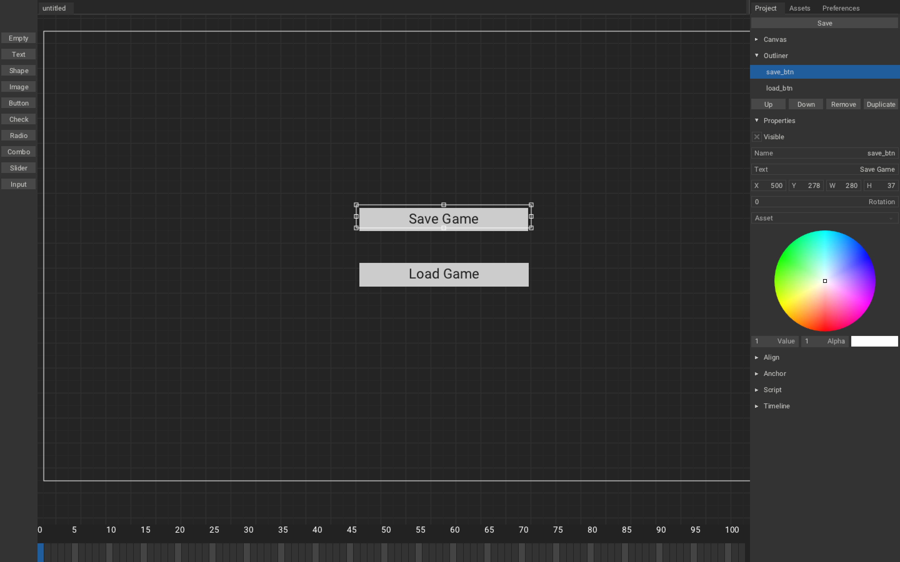

In this third and the last part we will add UI to our game for gamey effect.
Create a new scene Canvas trait(SaveLoad) and add following elements and set their event as 'savebtn' and 'loadbtn':

and if you play it, you should get something like this:

Now to button functionality, we will implement it in SaveLoadMechanism.hx
// In SaveLoadMechanism.hx
package arm;
import armory.system.Event;
import iron.Scene;
~
class SaveLoadMechanism extends iron.Trait {
~
public function new() {
super();
notifyOnInit(function(){
//Add event listener with string defined in Armory2D.
Event.add("save_btn", save);
Event.add("load_btn", load);
});
}
~
For our last and final feature, we are going to hide buttons on start and then we will able to show and hide them with m.
// In SaveLoadMechanism.hx
~
import armory.trait.internal.CanvasScript;// 1
typedef Cube = { loc : Vec4, rot : Vec4 }
class SaveLoadMechanism extends iron.Trait {
~
var canvas:CanvasScript;
var isButtonsHidden:Bool;
public function new() {
super();
notifyOnInit(function(){
//Get CanvasScript trait from active scene.
canvas = Scene.active.getTrait(CanvasScript);
hideButtons();
isButtonsHidden = true;
~
});
notifyOnUpdate(function (){
if (kb.started("m")){
if (isButtonsHidden){
showButtons();
}else{
hideButtons();
}
}
});
}
public function save() { ~ }
public function load() { ~ }
public function hideButtons() {
//Set Element visible property to false to hide the element
canvas.getElement("save_btn").visible = false;
canvas.getElement("load_btn").visible = false;
isButtonsHidden = true;
}
public function showButtons() {
//Set Element visible property to true to show the element
canvas.getElement("save_btn").visible = true;
canvas.getElement("load_btn").visible = true;
isButtonsHidden = false;
}
}
You should get the following result:
🎉There we go! Save and Load mechanism tutorial is over!🎉
For further improving, you can:
- Encrypt the file, so that people don't cheat.
- Add more value for it to save.
- Make GTA XII